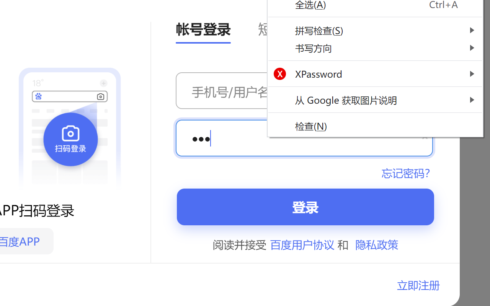
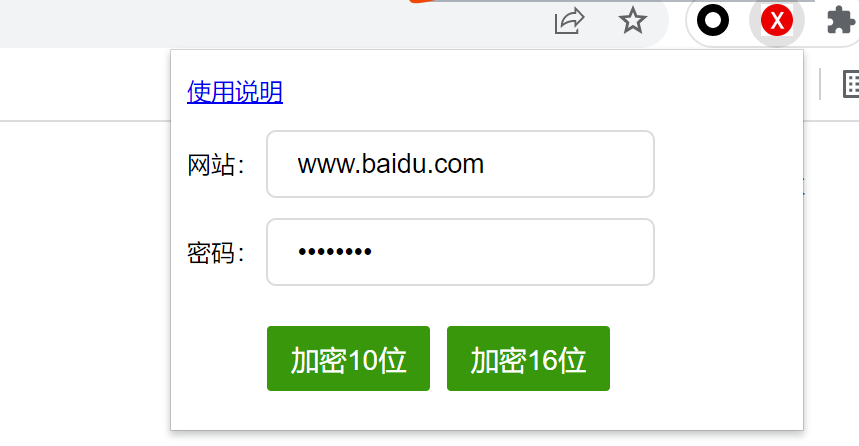

使用说明
加密算法
密码=MD5(秘钥+盐)，然后用户根据自己需求保留10位或者16位密码,
秘钥为用户自己输入的秘钥，一定不要泄露,
盐为当前页面域名，例如www.baidu.com
源码地址
为了确保插件可靠性，源码是开源的。见：
使用方法
- 1、PC端，输入原始密码后，直接在密码框右键选择加密位数
- 2、如果当前域名不是当时创建密码用的域名，可点击右上角插件图片，手动修改域名，然后生成对应位数密码
- 3、如果在移动端用，目前和方法2一样，会自动生成二维码，然后扫描复制使用，未来我们会考虑移动方案
- 4、建议：由于不同网站对密码要求强度不一致，建议可以在默认生成的密码加上固定前后缀
- 5、后续插件会完善添加各种哈希算法和强度设置


联系我们
有任何建议和想法，或者有插件相关需求，请联系我们：微信搜索“匠心技术人老陈”。